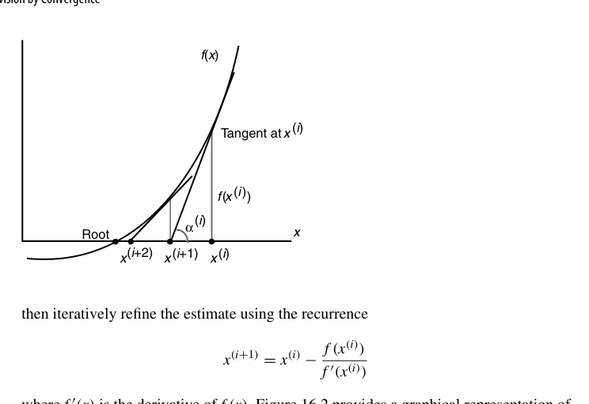
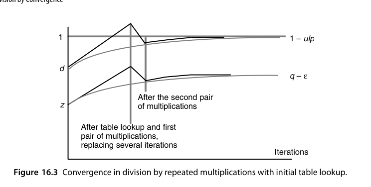
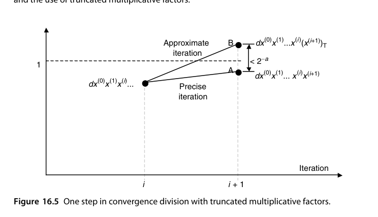
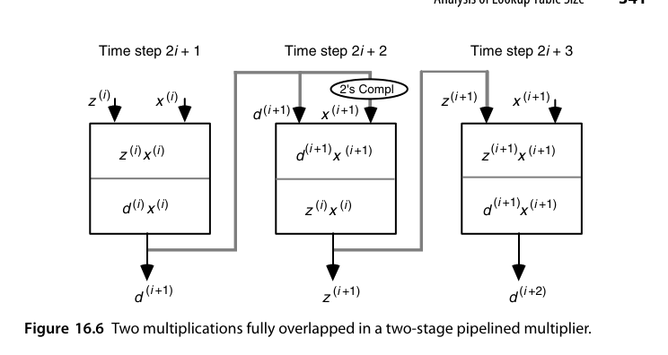
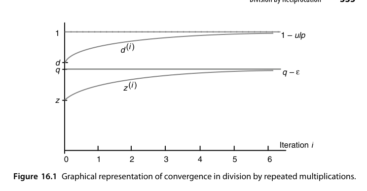
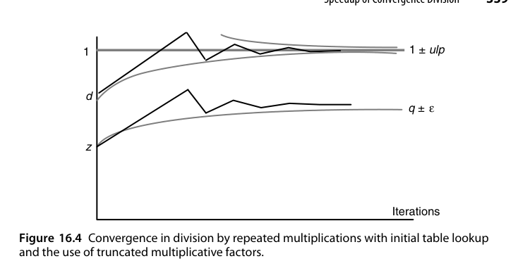

第16章 收敛法除法（Division by Convergence）
本章导读
前面所有除法都是”每拍硬算几位商”的数字递归（digit recurrence）路线；本章换一条完全不同的赛道：用乘法逼近除法。如果能算出一串因子，让分子分母同乘后分母趋于 1，分子就趋于商。迭代精度每轮平方翻倍（二次收敛，quadratic convergence），8 位 → 16 位 → 32 位 → 64 位只需 3 轮。代价是每轮要用到完整乘法器——所以这条路线只在”已有高速乘法器”的系统里划算（现代 FPU 正合此意）。
这是一次典型的用单步成本换步数的交易：数字递归每轮只做移位与加减，但要 \(O(k)\) 轮；收敛法每轮做全字长乘法，只需 \(O(\log k)\) 轮。乘法由阵列/树型结构实现时稳赚，系统只有迭代式乘法器时血亏。
16.1 一般收敛方法（General Convergence Methods)
收敛类算法的通用结构：
\[ z^{(i+1)} = z^{(i)} \times c^{(i)}, \qquad d^{(i+1)} = d^{(i)} \times c^{(i)} \]
选因子 \(c^{(i)}\) 使 \(d^{(i)} \to 1\)，则 \(z^{(i)} \to z/d\)。分析重点是收敛速度（每轮精度翻几倍）与每轮成本（几次乘法）。二次收敛（quadratic convergence）是这类方法的标志，与数字递归的线性收敛形成鲜明对比。
数字递归除法其实也能塞进同一个框架：\(s^{(j)} = s^{(j-1)} - \gamma^{(j)}d\)、\(q^{(j)} = q^{(j-1)} + \gamma^{(j)}\)，不变量为 \(s^{(j)} + q^{(j)}d = z\)，取 \(\gamma^{(j)} = q_{-j}r^{-j}\) 就是”每轮吐一位商”。可见两条路线的区别不在框架，而在 \(f\)、\(g\) 的复杂度与收敛阶。同一套”迭代 + 乘法”的框架把 \(f\)、\(g\) 换一换，就能算开方、倒数平方根、指数与三角（第 21-23 章反复回到这里）。
16.2 连乘法除法（Division by Repeated Multiplications)
经典构造：把分母写成 \(d = 1 - e\)（先规格化使 \(|e| < 1\)），则
\[ \frac{1}{d} = \frac{1}{1-e} = (1+e)(1+e^2)(1+e^4)(1+e^8)\cdots \]
每轮 \(c^{(i)} = 1 + e^{2^i}\)，而 \(1 + e^{2^i}\) 恰好由前一轮分母 \(d^{(i)}\) 取”2 的补”得到：\(c^{(i)} = 2 - d^{(i)}\)。每轮两次乘法（分子、分母各乘 \(c^{(i)}\)），误差按 \(e^{2^i}\) 平方消失。
收敛速度可精确算出：
\[ d^{(i+1)} = d^{(i)}\big(2 - d^{(i)}\big) = 1 - \big(1 - d^{(i)}\big)^2 \;\Longrightarrow\; 1 - d^{(i+1)} = \big(1-d^{(i)}\big)^2 \]
即误差自平方。因 \(1-d^{(0)} \le 2^{-1}\)，有 \(1-d^{(i)} \le 2^{-2^i}\)；要精确到 \(2^{-k}\) 需 \(2^m \ge k\)，故
\[ m = \lceil \log_2 k \rceil, \qquad \text{总乘法次数 } 2m - 1 \]
最后一轮分母已足够接近 1，只算分子。\(k=64\) 时 \(m=6\)、11 次乘法、6 次求补。
取 \(d = 0.9\)、\(z = 0.5\)（精确商 \(0.5555\cdots\)）：
| \(i\) | \(x^{(i)} = 2-d^{(i)}\) | \(d^{(i+1)}\) | \(z^{(i+1)}\) | \(1-d^{(i+1)}\) |
|---|---|---|---|---|
| 0 | \(1.1\) | \(0.99\) | \(0.55\) | \(10^{-2}\) |
| 1 | \(1.01\) | \(0.9999\) | \(0.5555\) | \(10^{-4}\) |
| 2 | \(1.0001\) | \(0.99999999\) | \(0.55555555\) | \(10^{-8}\) |
误差的指数 \(1 \to 2 \to 4 \to 8\) 每轮翻倍，而不是每轮多固定几位。
误差细节：即使运算完全精确，\(z=d\) 时分子分母都收敛到 \(1-\mathrm{ulp}\)，商偏小一个 ulp；对最高位为 1 的商统一加一个 ulp 可把最大误差降到 \(\mathrm{ulp}/2\)。乘法截断每轮引入至多 ulp 的负误差，\(m\) 轮累积 \(\le m\,\mathrm{ulp}\)，故中间结果只需多留 \(\lceil\log_2 m\rceil\) 位保护位。注意 \(d^{(i)}\) 的舍入误差无需计入——它同时出现在两条递推中，比值 \(z/d\) 不变。
16.3 倒数法除法（Division by Reciprocation)
拆成两步：先求倒数 \(1/d\)（Newton-Raphson，15.5 节），再乘被除数。Newton 迭代 \(r_{i+1} = r_i(2 - d r_i)\) 每轮两次乘法（可融合为 FMA 链）。
Newton-Raphson 求根的几何含义是”在曲线 \(y=f(x)\) 上点 \(x^{(i)}\) 处作切线，取切线与横轴的交点作为下一个估计”：
\[ x^{(i+1)} = x^{(i)} - \frac{f\big(x^{(i)}\big)}{f'\big(x^{(i)}\big)} \]

取 \(f(x) = 1/x - d\)（根为 \(1/d\)），\(f'(x) = -1/x^2\)，即得 \(x^{(i+1)} = x^{(i)}(2 - x^{(i)}d)\)。设 \(\delta^{(i)} = 1/d - x^{(i)}\)，则
\[ \delta^{(i+1)} = \frac{1}{d} - x^{(i)}\big(2 - x^{(i)}d\big) = d\big(\delta^{(i)}\big)^2 \]
因 \(d<1\) 有 \(\delta^{(i+1)} < (\delta^{(i)})^2\)——二次收敛得证，收敛条件为 \(0 < x^{(0)} < 2/d\)。最省事的初值是 \(x^{(0)} = 1.5\)（把 \(|\delta^{(0)}|\) 限制在 0.5 内）；更好的线性初值 \(x^{(0)} = 4(\sqrt3 - 1) - 2d = 2.9282 - 2d\) 把最大误差降到约 0.1，硬件上只需一次移位加一次减法。
以 \(d = 0.5\)（精确倒数 2.0）、\(x^{(0)} = 1.5\) 为例：\(x^{(1)} = 1.875\)、\(x^{(2)} = 1.9921875\)、\(x^{(3)} = 1.99996948\)，误差依次为 \(2^{-1}\)、\(2^{-3}\)、\(2^{-7}\)、\(2^{-15}\)——有效位数 1 → 3 → 7 → 15，严格翻倍。这就是”平方收敛”的直观含义。
与 16.2 的对偶：连乘法分子分母同步更新，倒数法只更新倒数——后者乘法次数略少，且得到的倒数可复用（同一除数多次除法，如矩阵归一化）。
两条路线在现代 FMA 硬件上几乎等价，工程选型更多取决于：舍入正确性（16.4 节）与能否复用倒数。GPU 的 rcp 指令走倒数路线，CPU 的除法微码多为连乘法的变体。
16.4 收敛除法的加速（Speedup of Convergence Division)
- 更好的初值：查表位数从 8 提到 10-12 位，可省一整轮迭代（一轮 = 两次乘法 ≈ 8-10 拍）；
- 倒数与连乘的混合：前几轮用便宜的连乘，末轮用倒数形式便于舍入控制；
- 末轮直通：最后一轮只算分子（分母已足够接近 1），省一次乘法；
- 舍入正确性：IEEE 754 要求除法结果正确舍入——逼近算法必须保证最后一步把”几乎正确的商”修正到正确的最近浮点数。常用手段：多算几位保护位 + 余数反推校验（\(z - q \cdot d\) 的符号判定舍入方向）。这是收敛除法设计中最微妙的环节。
加速的三条路是减少乘法次数、让乘法变窄、让乘法变快。关键在于收敛前期最亏：连乘法从 0 位做到 8 位要 6 次乘法，从 8 位做到 64 位只要 5 次。前几轮做的是把 \(d\) 从 \(0.1xxx\) 推到 \(0.1111xxxx\) 这种粗活，却付了全字长乘法的价钱——把 \(d\) 的高 \(w\) 位送进 ROM 直接读出 \(x^{(0+)} \approx x^{(0)}x^{(1)}x^{(2)}\)，一次查表就顶掉四次乘法。
允许 \(dx^{(0+)}\) 略大于 1 是另一个省钱技巧：此时下一轮因子 \(2-d^{(i)} = 1-\varepsilon\) 会把它拉回 1 下方但更接近 1。真正要保证的只是 \(|d^{(i)}-1|\) 平方下降，而不是 \(d^{(i)}\) 恒小于 1。

乘因子还可以截断：若目标是”从 \(l\) 位收敛到 \(2l\) 位”，把 \(d^{(i)}\) 截到 \(a\) 位（误差 \(\alpha < 2^{-a}\)），则
\[ d^{(i)}(x^{(i+1)})_T = (1-y^{(i)})(1+y^{(i)}+\alpha) = 1 - (y^{(i)})^2 + \alpha(1-y^{(i)}) \]
因 \(1-y^{(i)} < 1\)，附加误差 \(<\alpha\)。取 \(a = 2l\)，附加误差与目标误差同阶，乘因子变窄、乘法直接变快。代价是收敛方向不再单调，而是在 1 与 \(q\) 的上下两侧交替逼近（图 16.4）。

① 查表：\(256 \times 8 = 2\) Kbit ROM，一次换来 8 位收敛；② 迭代：三轮乘法对，乘因子宽度依次 9、17、33 位；③ 收尾：一次 \(64\times64\) 乘法。乘法次数从 11 降到 7，且其中 6 次乘数不足半宽。按位级迭代计总代价 \(2(9+17+33)+64 = 182\) 级，仅约 3 次全宽乘法。
16.5 硬件实现（Hardware Implementation)
典型数据通路：一个流水乘法器（复用浮点乘法器）+ 查表 ROM + 少量控制微码/状态机。IBM Power/PowerPC 的浮点除法、早期 x86 的除法微码都是这类结构。关键设计点：
- 乘法器的位宽冗余（内部多带几位）以控制累积舍入误差；
- 迭代调度尽量填满乘法流水线（两条独立的乘法链可交错）；
- 特殊值（NaN/Inf/0/非规格化）走旁路逻辑，不进迭代。
乘因子变窄是否真能提速取决于乘法器类型：数字递归型乘法器上窄操作数直接意味着更少的位级周期；全树型乘法器的延迟与宽度几乎无关，窄因子白省；部分 CSA 树（图 11.9 那类）介于两者之间。
连乘法每轮的 \(z^{(i)}x^{(i)}\) 与 \(d^{(i)}x^{(i)}\) 共享同一乘数且彼此独立，可以完全流水重叠：在两级流水乘法器上，\(z^{(i)}x^{(i)}\) 从上级移到下级的同时，下一轮的 \(d^{(i+1)}x^{(i+1)}\) 即可进入上级。调度上把 \(d\) 那条链排前面，好让下一轮的乘因子尽早算出。

倒数法享受不到这份重叠——\(x^{(i+1)} = x^{(i)}(2 - x^{(i)}d)\) 中第二次乘法依赖第一次的结果。它的出路只有把初值做得更准：初值误差界 \(2^{-16}\) 时，32 位商只需 3 次乘法、64 位商只需 5 次。为此可用线性插值补出初值，或把初值写成多操作数加法直接过一遍现成的 CSA 树算出。综合运用各种加速手段后，除法总延迟通常落在两次到五次普通乘法的量级。
16.6 查找表规模分析（Analysis of Lookup Table Size)
初值表是收敛法的”首付”：输入 \(d\) 的高 \(t\) 位、输出 \(r_0\) 的 \(t+u\) 位，表大小 \(2^t \times (t+u)\) 位。优化手段：
- 对称性/单调性压缩：利用倒数曲线形状，只存差分或分段线性系数；
- 双侧舍入（bipartite）与 multipartite 表（第 24 章）：把一张大表拆成两小张相加，面积平方级下降；
- 目标：用最小表保证初始误差 \(\le 2^{-(t+\epsilon)}\)，从而减少一轮迭代。
定理 16.1 要在第一轮迭代后获得 \(w \ge 5\) 位收敛（\(1 - 2^{-w} \le d\,x^{(0+)} \le 1 + 2^{-w}\)），必须查看 \(d\) 的 \(w\) 位（隐藏 1 之后的部分），且读出的 \(x^{(0+)}\) 也需 \(w\) 位小数。
证明思路：把 \(d\) 的前 \(w+1\) 位看成整数 \(u\)（\(2^w \le u < 2^{w+1}\)）、把 \(x^{(0+)}\) 去小数点后看成整数 \(v\)。由 \(2^{-(w+1)}u \le d < 2^{-(w+1)}(u+1)\) 与目标不等式（等价于 \(2^w - 1 \le dv \le 2^w+1\)）得
\[ \frac{2^{w+1}(2^w - 1)}{u} \le v \le \frac{2^{w+1}(2^w + 1)}{u + 1} \]
该区间内恒有整数解——这既证明了充分性，也给出了每个表项的上下界闭式，表的生成可以完全自动化。
设 \(w=8\)，某表项对应地址 55，即 \(d\) 以 0.1001 1011 1 开头，故 \(311/512 \le d < 312/512\)。要求 8 位收敛即
\[ \frac{311}{512}(1+.f) \ge 1-2^{-8}, \qquad \frac{312}{512}(1+.f) \le 1+2^{-8} \]
解出 \(\frac{199}{311} \le .f \le \frac{101}{156}\)，即 \(163.81 \le f \le 165.74\)（\(f = 256\times.f\)），故取整数 164 或 165 均可。可见表项不唯一，存在一个合法窗口——这正是允许”越过 1”带来的自由度。
查表 + 迭代是函数求值（第六部分）的总纲：除法、开方、超越函数都是”表给粗值、迭代/多项式给精度”。表的大小与迭代轮数互为消长——16.6 节的分析方法是第 21-24 章的通用武器。
本章小结
- 收敛除法：乘法逼近，二次收敛，3-4 轮出 64 位商。
- 连乘（分母→1）与倒数（Newton）两条路线，FMA 硬件上成本接近。
- 瓶颈在正确舍入的末轮处理与初值表规模。
- 适用前提：系统已有高速流水乘法器。
原书插图

